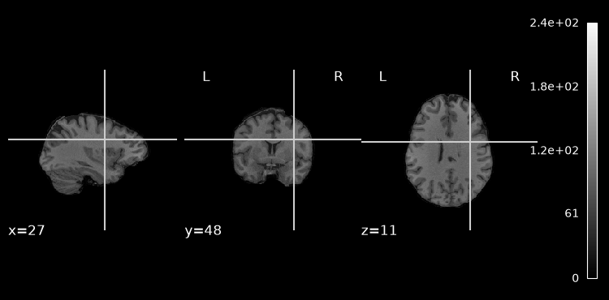
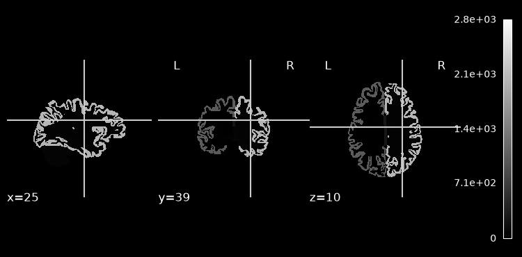
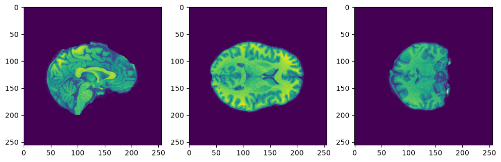
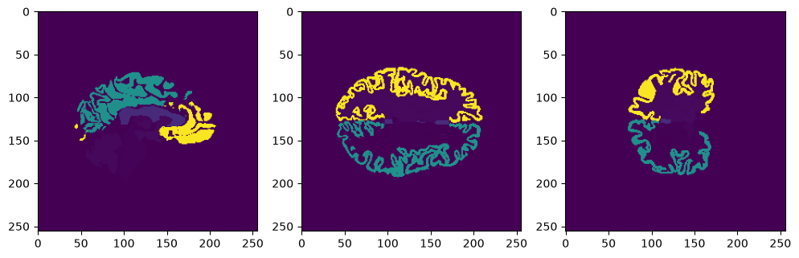

MRI segmentation with 3D U-Net#
Running locally#
Written for Google Colab (GPU runtime). On your own machine:
Fresh environment, pinned deps:
python3.12 --version python3.12 -m venv .venv source .venv/bin/activate python -m pip install --upgrade pip setuptools wheel python -m pip install -r requirements.txt python -m ipykernel install --user \ --name mri-3dunet-py312 \ --display-name "Python 3.12 (MRI 3D UNet)"
requirements.txtpulls the surface-distance package from GitHub, so you needgiton your PATH.You want a CUDA GPU. Whole-volume 3D U-Net training is heavy - the whole-image section takes ~25 min on a GPU and is not practical on CPU. CPU only? Set
num_epochs = 1and skip to the patch-based section just to watch the pipeline run.num_workers=multiprocessing.cpu_count()hangs on Windows. Usenum_workers=0there.
The !pip install lines below are a Colab convenience - locally, install once from requirements.txt instead.
1. Introduction#
We’re segmenting gray matter and subcortical nuclei from preprocessed MRI. Unlike parts 1 and 2, where we predicted one label per subject, here we predict a label for every voxel - a full 3D mask. This is where deep learning earns its keep in medical imaging: doing it by hand takes a radiologist hours per brain.
The model is a 3D U-Net. Input is a FreeSurfer-normalised T1; target is the aparc+aseg mask from recon-all.
What we actually train here is a binary model - brain-structure vs background. The aseg file contains dozens of distinct anatomical labels (the table further down lists some), but prepare_batch collapses them all to 1 and everything else to 0. That’s a deliberate simplification to keep training tractable in a seminar. Section 5 at the end sets up the multi-class version as an exercise.
By running this you confirm your personal access to the HCP data and agreement to its terms and conditions.
Code adapted from the TorchIO tutorials.
2. Setup and data#
Pin the libraries. Colab’s preinstalled versions drift and torchio/unet have both changed APIs across releases.
# Colab: install pinned deps. Locally: use requirements.txt instead and skip this cell.
# !pip install -q torchio unet nilearn SimpleITK
# !pip install -q git+https://github.com/google-deepmind/surface-distance.git
import os, sys, time, enum, random, warnings, multiprocessing
import numpy as np
import pandas as pd
import matplotlib.pyplot as plt
import nibabel
from tqdm import tqdm
from IPython.display import clear_output
import torch
import torch.nn as nn
import torch.nn.functional as F
from torch.utils.data import DataLoader, Subset
import torchio
from torchio import AFFINE, DATA, PATH, TYPE, STEM
from unet import UNet
# DSC / average-surface-distance metrics. The original notebook CALLED these but
# never imported them - it would NameError on a clean run.
from surface_distance import (
compute_dice_coefficient,
compute_surface_distances,
compute_average_surface_distance,
)
%matplotlib inline
device = torch.device("cuda" if torch.cuda.is_available() else "cpu")
if device.type != "cuda":
print("WARNING: no GPU - training will be impractically slow. Switch the runtime to GPU.")
print("device:", device)
/workspace/seminar5_neuroml/mri_3DUnet/.venv/lib/python3.12/site-packages/tqdm/auto.py:21: TqdmWarning: IProgress not found. Please update jupyter and ipywidgets. See https://ipywidgets.readthedocs.io/en/stable/user_install.html
from .autonotebook import tqdm as notebook_tqdm
WARNING: no GPU - training will be impractically slow. Switch the runtime to GPU.
device: cpu
/workspace/seminar5_neuroml/mri_3DUnet/.venv/lib/python3.12/site-packages/torch/cuda/__init__.py:188: UserWarning: CUDA initialization: The NVIDIA driver on your system is too old (found version 12080). Please update your GPU driver by downloading and installing a new version from the URL: http://www.nvidia.com/Download/index.aspx Alternatively, go to: https://pytorch.org to install a PyTorch version that has been compiled with your version of the CUDA driver. (Triggered internally at /__w/pytorch/pytorch/c10/cuda/CUDAFunctions.cpp:119.)
return torch._C._cuda_getDeviceCount() > 0
Getting the data#
The segmentation data is large. If the download dies partway, re-run the cell - it skips what’s already on disk.
!pip install -q gdown==5.2.0
from pathlib import Path
import gdown
data_root = Path("data")
data_root.mkdir(exist_ok=True)
data_dir = data_root / "fs_segmentation" # norm + aseg volumes
labels_csv = data_root / "unrestricted_hcp_freesurfer.csv" # demographics (for the Subject list)
Download data files, namely fs_segmentation.zip, unrestricted_hcp_freesurfer.csv and labels.npy, from https://cloud.appliedai.tech/s/6wXEsjEiJJLRyyA?path=%2FSeminar 5%2Fmri_3DUnet.
Place them into the data folder.
Run unzip fs_segmentation.zip.
print("files in", data_dir, ":", len(os.listdir(data_dir)))
files in data/fs_segmentation : 855
3. Building the subject list#
Each subject contributes two files: a norm volume (the input) and an aseg volume (the target). We pair them by subject ID.
labels = pd.read_csv(labels_csv)
# map: subject id -> {'norm': path, 'aseg': path}
paired = {}
for fname in os.listdir(data_dir):
for sid in labels['Subject']:
if str(sid) in fname:
kind = 'norm' if 'norm' in fname else ('aseg' if 'aseg' in fname else None)
if kind:
paired.setdefault(sid, {})[kind] = str(data_dir / fname)
break
# keep only subjects that have BOTH files
data_list = pd.DataFrame(
[{'Subject': sid, 'norm': v['norm'], 'aseg': v['aseg']}
for sid, v in paired.items() if 'norm' in v and 'aseg' in v]
).sort_values('Subject').reset_index(drop=True)
print(f"{len(data_list)} subjects with a complete norm+aseg pair")
data_list.head()
427 subjects with a complete norm+aseg pair
| Subject | norm | aseg | |
|---|---|---|---|
| 0 | 101006 | data/fs_segmentation/HCP_T1_fs6_101006_norm.ni... | data/fs_segmentation/HCP_T1_fs6_101006_aparc+a... |
| 1 | 101107 | data/fs_segmentation/HCP_T1_fs6_101107_norm.ni... | data/fs_segmentation/HCP_T1_fs6_101107_aparc+a... |
| 2 | 101309 | data/fs_segmentation/HCP_T1_fs6_101309_norm.ni... | data/fs_segmentation/HCP_T1_fs6_101309_aparc+a... |
| 3 | 101410 | data/fs_segmentation/HCP_T1_fs6_101410_norm.ni... | data/fs_segmentation/HCP_T1_fs6_101410_aparc+a... |
| 4 | 101915 | data/fs_segmentation/HCP_T1_fs6_101915_norm.ni... | data/fs_segmentation/HCP_T1_fs6_101915_aparc+a... |
Sanity-check by eye: the T1 and its segmentation.
from nilearn import plotting
import nilearn
plotting.plot_anat(nilearn.image.load_img(data_list['norm'].iloc[0]))
<nilearn.plotting.displays._slicers.OrthoSlicer at 0x7f97bab5b170>

seg_img = nilearn.image.load_img(data_list['aseg'].iloc[0])
plotting.plot_anat(seg_img)
<nilearn.plotting.displays._slicers.OrthoSlicer at 0x7f97b8325460>

Those aren’t intensities - they’re label IDs. Every distinct number is a different anatomical structure.
np.unique(seg_img.dataobj)
array([ 0, 2, 3, 4, 5, 7, 8, 10, 11, 12, 13,
14, 15, 16, 17, 18, 24, 26, 28, 30, 31, 41,
42, 43, 44, 46, 47, 49, 50, 51, 52, 53, 54,
58, 60, 62, 63, 77, 85, 251, 252, 253, 254, 255,
1000, 1001, 1002, 1003, 1005, 1006, 1007, 1008, 1009, 1010, 1011,
1012, 1013, 1014, 1015, 1016, 1017, 1018, 1019, 1020, 1021, 1022,
1023, 1024, 1025, 1026, 1027, 1028, 1029, 1030, 1031, 1032, 1033,
1034, 1035, 2000, 2001, 2002, 2003, 2005, 2006, 2007, 2008, 2009,
2010, 2011, 2012, 2013, 2014, 2015, 2016, 2017, 2018, 2019, 2020,
2021, 2022, 2023, 2024, 2025, 2026, 2027, 2028, 2029, 2030, 2031,
2032, 2033, 2034, 2035], dtype=int32)
Structure |
Seg ID |
|---|---|
Left-Lateral-Ventricle |
4 |
Left-Inf-Lat-Vent |
5 |
3rd-Ventricle |
14 |
4th-Ventricle |
15 |
Brain Stem |
16 |
Left Hippocampus |
17 |
Left Amygdala |
18 |
Right-Lateral-Ventricle |
43 |
Right-Inf-Lat-Vent |
44 |
Right Hippocampus |
53 |
Right Amygdala |
54 |
5th-Ventricle |
72 |
Ventrices - cognitive impairment, aging, Alzheimer’s. 1
Brain Stem - cognitive impairment, metabolic pathway disorders (Parkinson): 2, 3
Hippocampus and Amygdala - autism spectrum disorders, epilepsy 4
:max_bytes(150000):strip_icc():format(webp)/brain_ventricles-56d0ccd03df78cfb37b876dc.jpg)
4. Dataset, transforms, and split#
torchio.Image reads the volumes, torchio.Subject bundles a scan with its mask, torchio.SubjectsDataset serves them.
import torchio
import enum
"""
Code adapted from: https://github.com/fepegar/torchio#credits
Credit: Pérez-García et al., 2020, TorchIO:
a Python library for efficient loading, preprocessing,
augmentation and patch-based sampling of medical images in deep learning.
"""
CHANNELS_DIMENSION = 1
SPATIAL_DIMENSIONS = 2, 3, 4
MRI = 'MRI'
LABEL = 'LABEL'
LIST_ASEG = [ 8, 10, 11, 12, 13, 16, 17, 18, 26, 47, 49, 50,
51, 52, 53, 54, 58, 85, 251, 252, 253, 254, 255] # gray matter segmentation labels
class Action(enum.Enum):
TRAIN = 'Training'
VALIDATE = 'Validation'
def get_torchio_dataset(inputs, targets, transform):
"""
The function creates dataset from the list of files from cunstumised dataloader.
"""
subjects = []
for (image_path, label_path) in zip(inputs, targets):
subject_dict = {
MRI : torchio.Image(image_path, torchio.INTENSITY),
LABEL: torchio.Image(label_path, torchio.LABEL),
}
subject = torchio.Subject(subject_dict)
subjects.append(subject)
if transform:
dataset = torchio.SubjectsDataset(subjects, transform = transform)
elif not transform:
dataset = torchio.SubjectsDataset(subjects)
return dataset , subjects
data, subjects = get_torchio_dataset(
data_list['norm'].values, data_list['aseg'].values, transform=False
)
print("dataset size:", len(data))
dataset size: 427
Visualisation helpers for 3D tensors#
import matplotlib.pyplot as plt
import torch
import numpy as np
import nibabel
def plot_central_cuts(img, title=""):
"""
param image: tensor or np array of shape (CxDxHxW) if t is None
"""
if isinstance(img, torch.Tensor):
img = img.numpy()
if (len(img.shape) > 3):
img = img[0,:,:,:]
elif isinstance(img, nibabel.nifti1.Nifti1Image):
img = img.get_fdata()
fig, axes = plt.subplots(nrows=1, ncols=3, figsize=(3 * 4, 4))
axes[0].imshow(img[ img.shape[0] // 2, :, :])
axes[1].imshow(img[ :, img.shape[1] // 2, :])
axes[2].imshow(img[ :, :, img.shape[2] // 2])
plt.show()
def plot_predicted(img, seg, delta = 0, title=""):
"""
param image: tensor or np array of shape (CxDxHxW) if t is None
"""
if isinstance(img, torch.Tensor):
img = img.cpu().numpy()
if (len(img.shape) == 5):
img = img[0,0,:,:,:]
elif (len(img.shape) == 4):
img = img[0,:,:,:]
elif isinstance(img, nibabel.nifti1.Nifti1Image):
img = img.get_fdata()
if isinstance(seg, torch.Tensor):
seg= seg[0].cpu().numpy().astype(np.uint8)
fig, axes = plt.subplots(nrows=1, ncols=3, figsize=(3 * 4, 4))
axes[0].imshow(img[ img.shape[0] // 2 + delta, :, :])
axes[1].imshow(seg[ seg.shape[0] // 2 + delta, :, :])
intersect = img[ img.shape[0] // 2 + delta, :, :] + seg[ seg.shape[0] // 2 + delta, :, :]*100
axes[2].imshow(intersect, cmap='gray')
plt.show()
img = data[0][MRI]
seg = data[0][LABEL]
print("image shape:", img.shape, "| segmentation shape:", seg.shape)
plot_central_cuts(img[DATA])
plot_central_cuts(seg[DATA])
image shape: (1, 256, 256, 256) | segmentation shape: (1, 256, 256, 256)


The split#
from sklearn.model_selection import train_test_split
SUBSET = 40 # set to None to use every subject (slow!)
TRAIN_FRACTION = 0.7
idx = np.arange(len(subjects))
rng = np.random.default_rng(0)
rng.shuffle(idx)
if SUBSET:
idx = idx[:SUBSET]
train_idx, val_idx = train_test_split(idx, train_size=TRAIN_FRACTION, random_state=0)
training_subjects = [subjects[i] for i in train_idx]
validation_subjects = [subjects[i] for i in val_idx]
assert not (set(train_idx) & set(val_idx)) # no subject in both
training_set = torchio.SubjectsDataset(training_subjects, transform=None)
validation_set = torchio.SubjectsDataset(validation_subjects, transform=None)
print(f"training {len(training_set)} | validation {len(validation_set)} subjects")
training 28 | validation 12 subjects
Whole volumes are heavy, so one subject per batch.
num_workers = 0 if os.name == "nt" else multiprocessing.cpu_count()
training_loader = torch.utils.data.DataLoader(
training_set, batch_size=1, shuffle=True, num_workers=num_workers)
validation_loader = torch.utils.data.DataLoader(
validation_set, batch_size=1, num_workers=num_workers)
5. Metrics, loss, and the training loop#
A few notes on what’s here.
prepare_batch is where the binarisation happens: every label in LIST_ASEG (plus the cortical parcellation IDs ≥ 1000) becomes 1, everything else 0. This is the “binary” decision from the intro made concrete - the multi-class exercise at the end starts by changing this function.
Dice loss is computed over both channels, background included. Since background is most of the volume and trivially easy, it drags the reported number toward optimism - that’s why “loss < 0.7” counts as a decent result here rather than something near zero. Worth knowing when you read the curve.
def get_iou_score(prediction, ground_truth):
intersection, union = 0, 0
intersection += np.logical_and(prediction > 0, ground_truth > 0).astype(np.float32).sum()
union += np.logical_or(prediction > 0, ground_truth > 0).astype(np.float32).sum()
iou_score = float(intersection) / union
return iou_score
def calculate_metrics(surface, prediction):
dsc = compute_dice_coefficient(surface, prediction)
asd_mean, asd_std = compute_average_surface_distance(
compute_surface_distances(
surface, prediction, spacing_mm=(1,1,1))
)
iou = get_iou_score(prediction, surface)
return dsc, asd_mean, asd_std, iou
## see more in https://github.com/deepmind/surface-distance
def validate_dsc_asd(model, loader):
'''
Function to get metrics on valiadtion loader
'''
dsc, asd_mean, asd_std, iou = [], [], [], []
model.eval()
for batch_idx, batch in enumerate(tqdm(loader)):
inputs, targets = prepare_batch(batch, device)
with torch.no_grad():
logits = forward(model, inputs)
labels = logits.argmax(dim=CHANNELS_DIMENSION)
prediction = labels[0].cpu().numpy().astype(np.uint8)
dsc_temp, asd_mean_temp, asd_std_temp, iou_temp = calculate_metrics(
targets.cpu().numpy().astype(np.uint8)[0][0],
prediction
)
dsc.append(dsc_temp)
asd_mean.append(asd_mean_temp)
asd_std.append(asd_std_temp)
iou.append(iou_temp)
return dsc, asd_mean, asd_std, iou
def prepare_batch(batch, device):
"""
The function loaging *nii.gz files, sending to the device.
For the LABEL in binarises the data.
"""
inputs = batch[MRI][DATA].to(device)
targets = batch[LABEL][DATA]
targets[0][0][(np.isin(targets[0][0], LIST_ASEG))] = 1
targets[targets >= 1000] = 1
targets[targets != 1] = 0
targets = targets.to(device)
return inputs, targets
def get_dice_score(output, target, SPATIAL_DIMENSIONS = (2, 3, 4), epsilon=1e-9):
p0 = output
g0 = target
p1 = 1 - p0
g1 = 1 - g0
tp = (p0 * g0).sum(dim=SPATIAL_DIMENSIONS)
fp = (p0 * g1).sum(dim=SPATIAL_DIMENSIONS)
fn = (p1 * g0).sum(dim=SPATIAL_DIMENSIONS)
num = 2 * tp
denom = 2 * tp + fp + fn + epsilon
dice_score = num / denom
return dice_score
def get_dice_loss(output, target):
return 1 - get_dice_score(output, target)
def forward(model, inputs):
with warnings.catch_warnings():
warnings.filterwarnings("ignore", category=UserWarning)
logits = model(inputs)
return logits
def run_epoch(epoch_idx, action, loader, model, optimizer, scheduler=False, experiment= False):
is_training = action == Action.TRAIN
epoch_losses = []
model.train(is_training)
for batch_idx, batch in enumerate(tqdm(loader)):
inputs, targets = prepare_batch(batch, device)
optimizer.zero_grad()
with torch.set_grad_enabled(is_training):
#main part
logits = forward(model, inputs.float())
probabilities = F.softmax(logits, dim=CHANNELS_DIMENSION)
batch_losses = get_dice_loss(probabilities, targets)
batch_loss = batch_losses.mean()
if is_training:
batch_loss.backward()
optimizer.step()
# appending the loss
epoch_losses.append(batch_loss.item())
if experiment:
if action == Action.TRAIN:
experiment.log_metric("train_dice_loss", batch_loss.item())
elif action == Action.VALIDATE:
experiment.log_metric("validate_dice_loss", batch_loss.item())
del inputs, targets, logits, probabilities, batch_losses
epoch_losses = np.array(epoch_losses)
# print(f'{action.value} mean loss: {epoch_losses.mean():0.3f}')
return epoch_losses
def train(num_epochs, training_loader, validation_loader, model, optimizer, scheduler,
weights_stem, save_epoch= 1, experiment= False, verbose = True):
start_time = time.time()
epoch_train_loss, epoch_val_loss = [], []
run_epoch(0, Action.VALIDATE, validation_loader, model, optimizer, scheduler, experiment)
for epoch_idx in range(1, num_epochs + 1):
epoch_train_losses = run_epoch(epoch_idx, Action.TRAIN, training_loader,
model, optimizer, scheduler, experiment)
epoch_val_losses = run_epoch(epoch_idx, Action.VALIDATE, validation_loader,
model, optimizer, scheduler, experiment)
# 4. Print metrics
if verbose:
clear_output(True)
print("Epoch {} of {} took {:.3f}s".format(epoch_idx, num_epochs, time.time() - start_time))
print(" training loss (in-iteration): \t{:.6f}".format(epoch_train_losses[-1]))
print(" validation loss: \t\t\t{:.6f}".format(epoch_val_losses[-1]))
epoch_train_loss.append(np.mean(epoch_train_losses))
epoch_val_loss.append(np.mean(epoch_val_losses))
# 5. Plot metrics
if verbose:
plt.figure(figsize=(10, 5))
plt.plot(epoch_train_loss, label='train')
plt.plot(epoch_val_loss, label='val')
plt.xlabel('epoch')
plt.ylabel('loss')
plt.legend()
plt.show()
if scheduler:
scheduler.step(np.mean(epoch_val_losses))
# comet ml
if experiment:
experiment.log_epoch_end(epoch_idx)
#saving the model
if (epoch_idx% save_epoch == 0):
if not os.path.exists('weights'): os.makedirs('weights')
torch.save(model.state_dict(), f'weights/{weights_stem}_epoch_{epoch_idx}.pth')
def get_model_and_optimizer(device, num_encoding_blocks=3, out_channels_first_layer=4, patience=3):
# Better to train with num_encoding_blocks=3, out_channels_first_layer = 16 '''
# repoducibility
torch.manual_seed(0)
np.random.seed(0)
torch.backends.cudnn.deterministic = True
torch.backends.cudnn.benchmark = False
model = UNet(
in_channels=1,
out_classes=2,
dimensions=3,
num_encoding_blocks=num_encoding_blocks,
out_channels_first_layer=out_channels_first_layer,
normalization='batch',
upsampling_type='linear',
padding=True,
activation='PReLU',
).to(device)
optimizer = torch.optim.AdamW(model.parameters())
# scheduler = torch.optim.lr_scheduler.StepLR(optimizer, step_size=3, gamma=0.7)
scheduler = torch.optim.lr_scheduler.ReduceLROnPlateau(optimizer, mode='min', factor=0.1, patience=patience, threshold=0.01)
return model, optimizer, scheduler
model, optimizer, scheduler = get_model_and_optimizer(device)
6. Whole-brain segmentation#
~25 minutes on a GPU. The scheduler is passed through properly now (the original passed scheduler=False here, disabling the LR schedule it had just built).
torch.cuda.empty_cache()
num_epochs = 5
weights_stem = 'whole_images'
train(num_epochs, training_loader, validation_loader,
model, optimizer, scheduler=scheduler, weights_stem=weights_stem)
100%|██████████| 12/12 [01:24<00:00, 7.03s/it]
18%|█▊ | 5/28 [02:09<08:04, 21.05s/it]
On the full sample with ~40 epochs you should see DICE above 0.9. With 5 epochs on a 40-subject subset, expect considerably less - the point here is the mechanics, not the number.
Let’s see what it predicts.
batch = next(iter(validation_loader))
model.eval()
inputs, targets = prepare_batch(batch, device)
with torch.no_grad():
logits = forward(model, inputs.float())
labels_pred = logits.argmax(dim=CHANNELS_DIMENSION)
foreground = labels_pred[0].cpu().numpy().astype(np.uint8)
plot_central_cuts(foreground)
plot_predicted(inputs, foreground, 30, title="prediction overlaid on input")
plot_central_cuts(targets[0].cpu()) # ground truth
print(labels_pred[0].size(), targets[0][0].size())
get_dice_score(labels_pred.unsqueeze(1).float(), targets.float())
7. Patch-based segmentation#
Short on GPU memory, or on subjects? Cut each volume into patches and segment those. torchio.Queue samples patches on the fly.
Note we reuse the same train() / run_epoch() from above - only the loaders change.
patch_size = 64
samples_per_volume = 8
max_queue_length = 240
patch_batch_size = 16
patches_training_set = torchio.Queue(
subjects_dataset=training_set,
max_length=max_queue_length,
samples_per_volume=samples_per_volume,
sampler=torchio.sampler.UniformSampler(patch_size),
num_workers=num_workers,
shuffle_subjects=True,
shuffle_patches=True,
)
patches_validation_set = torchio.Queue(
subjects_dataset=validation_set,
max_length=max_queue_length,
samples_per_volume=samples_per_volume,
sampler=torchio.sampler.UniformSampler(patch_size),
num_workers=num_workers,
shuffle_subjects=False,
shuffle_patches=False,
)
patch_training_loader = torch.utils.data.DataLoader(patches_training_set, batch_size=patch_batch_size)
patch_validation_loader = torch.utils.data.DataLoader(patches_validation_set, batch_size=patch_batch_size)
model, optimizer, scheduler = get_model_and_optimizer(device)
num_epochs = 5
train(num_epochs, patch_training_loader, patch_validation_loader,
model, optimizer, scheduler=scheduler, weights_stem='patches')
Inference happens per-patch, so to see a whole brain we have to stitch the patches back together: GridSampler cuts the volume up, GridAggregator reassembles the predictions.
def predict_full_volume(model, sample, patch_size=(64, 64, 64), patch_overlap=(4, 4, 4), batch_size=16):
grid_sampler = torchio.inference.GridSampler(sample, patch_size, patch_overlap)
patch_loader = torch.utils.data.DataLoader(grid_sampler, batch_size=batch_size)
aggregator = torchio.inference.GridAggregator(grid_sampler)
model.eval()
with torch.no_grad():
for patches_batch in patch_loader:
inputs = patches_batch[MRI][DATA].to(device).float()
locations = patches_batch['location']
logits = model(inputs)
preds = logits.argmax(dim=CHANNELS_DIMENSION, keepdim=True)
aggregator.add_batch(preds, locations)
return aggregator.get_output_tensor()
sample = random.choice(validation_set)
plot_central_cuts(predict_full_volume(model, sample))
Now train it properly - 40 epochs. Expect loss below 0.7.
model, optimizer, scheduler = get_model_and_optimizer(device)
num_epochs = 40
train(num_epochs, patch_training_loader, patch_validation_loader,
model, optimizer, scheduler=scheduler, weights_stem='patches')
sample = random.choice(validation_set)
plot_central_cuts(predict_full_volume(model, sample))
8. Exercise: go multi-class#
Everything above is binary - brain-structure vs background. But the aseg volume knows the difference between a hippocampus and a ventricle, and we threw that away. Recover it.
Three things have to change together:
prepare_batch- stop collapsing to 0/1. Map each label inLIST_ASEGto a contiguous class index (0 = background, 1..N = structures).torch.bucketizeor a lookup tensor is cleaner than a chain of masks.get_model_and_optimizer-out_classes=2becomesout_classes=len(LIST_ASEG) + 1.The loss - Dice over N classes needs one-hot targets, and you’ll want to exclude background from the mean, or the easy background class will dominate the score exactly as it partly does now. Cross-entropy + Dice together is the usual pairing.
Then ask the interesting question: does per-structure Dice look anything like the binary Dice? Small structures (amygdala, 5th ventricle) are much harder than big ones, and a single averaged number hides that completely. Report Dice per class.
Other things worth trying#
Crop the empty corners. You’re spending compute on air.
Bigger patches beat smaller ones - 128³ if memory allows.
Is the U-Net deep enough? Wide enough? Watch your memory.
Augmentation is essentially mandatory for patch-based training (rotation, smoothing), but it roughly doubles training time.
Adjust the learning rate as you go - the scheduler is already wired up.
Probably not worth your time: patch-location as a model input, focal loss, training only on non-zero patches.